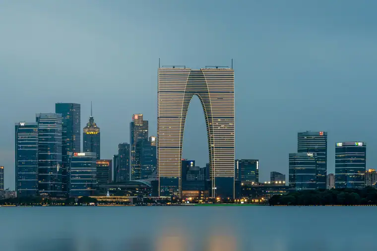
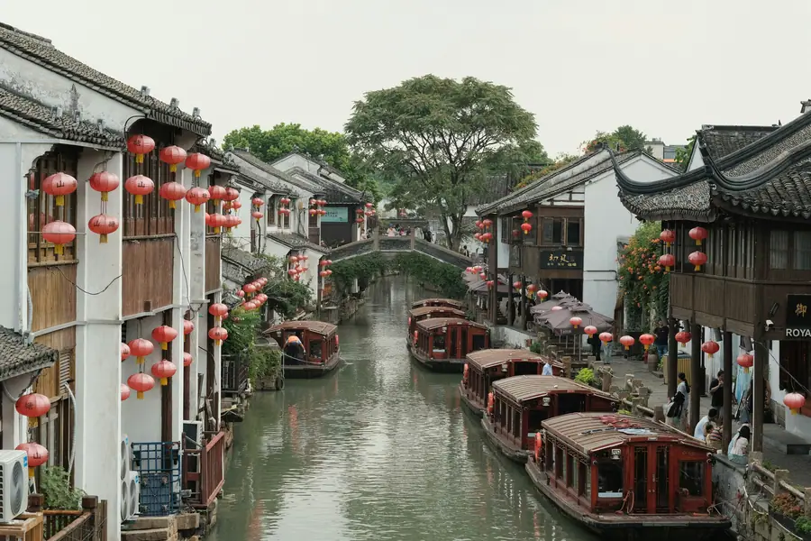
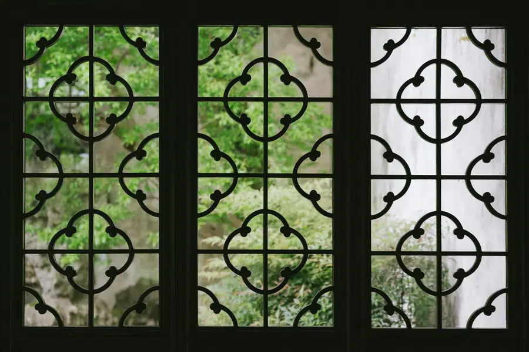

Suzhou Airport Transfer & Private Car
Sunan Shuofang Airport (WUX) to downtown with licensed professional driver. Fixed price, free flight tracking. Explore the Venice of the East in comfort. Reliable Suzhou car service for every trip. Book a private car in Suzhou with just a few clicks. Pick-up and drop-off in Suzhou, door to door.
Suzhou in Pictures
Real scenes from Suzhou — landmarks, streets and everyday life.



Suzhou at a Glance
China's most elegant city — where classical gardens, ancient canals, and silk heritage create timeless beauty. Reliable Suzhou car service for every trip. Book a private car in Suzhou with just a few clicks. Pick-up and drop-off in Suzhou, door to door.
Name Origin
The name "Suzhou" (苏州) derives from the ancient "Gusu" (姑苏), a name linked to the legendary Gusu Terrace built by King Helü of Wu in the 6th century BC. Founded in 514 BC, Suzhou has been a center of culture, commerce, and refinement for over two and a half millennia. During the Ming and Qing dynasties, it was China's wealthiest city and the heart of the Jiangnan literati culture.
Education & Universities
Suzhou is home to Soochow University (founded 1900, one of China's oldest modern universities), Suzhou University of Science and Technology, and the Xi'an Jiaotong-Liverpool University — a unique Sino-British joint venture. The city also hosts numerous research institutes and the Suzhou Industrial Park's international schools. The city's intellectual tradition dates back to the imperial examination system, when Suzhou produced more top scholars than any other city in China.
Metro & Transportation
Suzhou's metro system has 9 lines and 210+ km of track, connecting the city center with the Suzhou Industrial Park, Suzhou New District, and neighboring Kunshan. Line 11 even connects to Shanghai Metro Line 11, making cross-city travel possible by subway. However, the metro doesn't reach all the classical gardens or water towns. A private car is the most convenient way to visit multiple gardens, the ancient Pingjiang Road, and nearby water towns in one day.
Natural Resources & Environment
Suzhou sits in the heart of the Yangtze River Delta, crisscrossed by a network of canals that earned it the nickname "Venice of the East." The Grand Canal (UNESCO World Heritage) runs through the city, and Taihu Lake (China's third-largest freshwater lake) lies to its west. The city is famous for its mild climate, abundant rainfall, and fertile soil — ideal for the gardens that have made Suzhou world-renowned. The Dongshan and Xishan islands in Taihu Lake are famous for their tea plantations and fruit orchards.
🗺️ Maps & Transit
Plan your route before you arrive. Download the official metro maps below.
Top Suzhou Attractions
From UNESCO-listed gardens to ancient canals, discover Suzhou's timeless beauty with a private driver.
Humble Administrator's Garden
UNESCO World Heritage • Largest Classical Garden
The largest and most famous of Suzhou's classical gardens, covering 5.2 hectares. Built in 1509 during the Ming Dynasty, it features pavilions, bridges, and water features arranged in perfect harmony. A private car lets you arrive early and avoid the midday crowds.
⛰️ Lingering Garden
UNESCO World Heritage • Qing Dynasty Masterpiece
One of China's four most famous gardens, renowned for its exquisite architecture, ancient trees, and the stunning Cloud-Capped Peak rockery. The garden's design creates an ever-changing landscape as you move through it. Our drivers know the best times to visit.
🌸 Master of the Nets Garden
UNESCO World Heritage • Intimate Perfection
The smallest of Suzhou's major gardens but considered the most perfectly designed. Its intimate scale and clever use of space have inspired gardens worldwide, including the Metropolitan Museum's Astor Court in New York. Evening performances of Kunqu opera are held here in summer.
🛶 Pingjiang Road Historic District
Ancient Canal Street • Song Dynasty Layout
A 1.6 km historic street along the Pingjiang Canal, preserving the layout of the Song Dynasty. Stone bridges, white-washed houses, teahouses, and traditional shops line the canal. Your driver can drop you at one end and pick you up at the other after a leisurely stroll.
⛰️ Tiger Hill (Huqiu)
Yunyan Pagoda • Sword Pool Legend
A historic hill topped by the leaning Yunyan Pagoda, built in 961 AD and older than the Leaning Tower of Pisa. Legend says the tomb of King Helü lies beneath the Sword Pool, with 3,000 swords buried alongside him. The surrounding park is beautiful in all seasons.
🏝️ Suzhou Museum
I.M. Pei Design • Ancient Art Collection
Designed by world-renowned architect I.M. Pei (a Suzhou native), this museum blends modern geometry with traditional Suzhou garden aesthetics. It houses over 30,000 pieces including ancient jade, ceramics, and paintings. Free admission but advance booking is required.
Popular Suzhou Routes
Fixed-price private car service for Suzhou's most popular journeys.
WUX Sunan Shuofang Airport → Suzhou Downtown
From ¥273 (≈ $38.45)~30 km · 40–60 min · Economy/Business/MPV
Sunan Shuofang International Airport (WUX) is the closest airport to Suzhou. Your driver meets you at the arrival hall with a name board, tracks your flight for delays, and takes you directly to hotels in Gusu, Suzhou Industrial Park, or Wuzhong districts. No waiting for taxis or navigating public transit.
🏝️ PVG Pudong Airport → Suzhou
From ¥273 (≈ $38.45)~120 km · 90–120 min · Economy/Business/MPV
Many international travelers arrive at Shanghai Pudong Airport (PVG) and need transport to Suzhou. Our private car service offers the most comfortable option — direct door-to-door transfer with an licensed professional driver who knows the best routes to avoid Shanghai traffic.
🌊 Suzhou → Zhouzhuang Water Town
From ¥520 (≈ $73.24)~40 km · 45 min · 4-hour half-day trip
Visit China's most famous ancient water town — a maze of canals, stone bridges, and Ming-Qing dynasty houses. Your driver picks you up at your hotel, drives you to Zhouzhuang, waits while you explore, and returns you to Suzhou. Avoid the crowded tour buses.
🛕 Suzhou Classical Gardens Tour (Full Day)
From ¥793 (≈ $111.69)8 hours · Business vehicle · Custom itinerary
Visit the Humble Administrator's Garden, Lingering Garden, Master of the Nets Garden, and Tiger Hill in one day with a private car. Your driver knows the best routes, parking locations, and timing to avoid crowds. Add a fluent English guide for deeper garden insights.
Transparent Pricing in Suzhou
Published rates, no estimate games. Check the numbers yourself before you book — and the price you see is the price your driver is paid from.
Fixed Price List — 苏州市 (Suzhou)
Published rates from our 2026 quote sheet. Renminbi first, USD for reference at 1 USD = ¥7.10. Every price below already includes tolls, parking, driver service and free airport waiting time (up to 60 minutes after your flight lands) — nothing is added on the day.
🛬 Airport & Intercity Transfer
One flat fare for airport pickup, drop-off or city-to-city — intercity costs the same as the airport run. 35 km and 60 minutes included; beyond that we charge by the minute and the kilometre at the rates shown.
| Vehicle | Seats | Bags | Fixed fare | USD | Beyond 35 km / 60 min |
|---|---|---|---|---|---|
| 4-seat Economy Sedan | 4 | 2 | ¥273 | ≈ $38.45 | ¥1.33/min · ¥5.97/km |
| 4-seat Comfort Sedan | 4 | 2 | ¥390 | ≈ $54.93 | ¥1.47/min · ¥6.6/km |
| 6-seat Business Van | 6 | 3 | ¥477 | ≈ $67.18 | ¥1.56/min · ¥7.02/km |
| 8-11-seat Business Van | 11 | 4 | ¥827 | ≈ $116.48 | ¥2.03/min · ¥9.13/km |
| 12-18-seat Minibus | 18 | 4 | ¥952 | ≈ $134.08 | ¥2.26/min · ¥10.18/km |
| 19-55-seat Coach Bus | 55 | 5 | ¥1014 | ≈ $142.82 | ¥2.57/min · ¥11.58/km |
🚗 Hourly Private Charter
Book the car and the hours, keep the car for the day. Unused kilometres can be carried into the next tier, so a long day never turns into a penalty. The driver stays with you — you set the stops.
| Vehicle | 2h / 35km | 4h / 50km | 6h / 75km | 8h / 100km | 10h / 125km |
|---|---|---|---|---|---|
| 4-seat Private Car | ¥325 | ¥520 | ¥689 | ¥793 | ¥845 |
| 6-seat Business Van | ¥429 | ¥676 | ¥897 | ¥1027 | ¥1105 |
| 8-11-seat Business Van | ¥618 | ¥973 | ¥1292 | ¥1479 | ¥1591 |
| 12-18-seat Minibus | ¥741 | ¥1168 | ¥1550 | ¥1775 | ¥1909 |
| 19-55-seat Coach Bus | ¥890 | ¥1402 | ¥1860 | ¥2130 | ¥2291 |
Why travellers book Suzhou with Chinawheely
Six things you get with every booking — in Suzhou and across all 333 cities on the platform.
Licensed travel agency, not a ride-hail app
Chinawheely is a registered travel agency (L-HUB-101603). Your booking is a travel contract with a licensed operator — not a broker handing your number to whoever answers the phone.
One locked price, shown before you pay
The price you see is the price you pay. Tolls, parking, driver service and airport waiting time are already inside it. No surge pricing, no meter, no cash-on-the-day surprise.
Flight tracked, waiting time on us
We watch your flight number in real time. If it lands late or is delayed, your driver shifts with it and the waiting time stays on us — not on your bill.
A licensed driver who knows the city
Every car is driven by a professional local driver who knows the routes, the shortcuts and the parking that actually works near the attractions — with English communication and a name board on arrival.
Free changes up to 48 hours before
Plans move. Reschedule or cancel any booking free of charge up to 48 hours before your scheduled pickup, straight from your confirmation link.
A real human on WhatsApp, 8AM–12AM Beijing time
One message reaches a person who can re-price, re-route or re-plan your trip on the spot. No ticket queue, no chatbot loop.
Book Suzhou at the published price
Pick your vehicle, see the fare line by line, and pay by PayPal or Alipay. Free changes up to 48 hours before pickup — or ask on WhatsApp and we will hold a car for you.
The quote is valid for 48 hours, and you can change or cancel free up to 48 hours before pickup.
Getting to Suzhou: Airports & Railway Stations
Getting to Suzhou by air, rail, or road
✈️ Airports
🌊 Sunan Shuofang International Airport (WUX)
West of the city · 30 km to Suzhou downtown
WUX is the closest airport to Suzhou, located between Wuxi and Suzhou. It serves domestic flights to major Chinese cities and some international routes to Southeast Asia and Japan. The airport has one terminal. By road, expect 40–60 minutes to Suzhou downtown hotels. A private car is the most convenient option as public transit connections are limited.
⛰️ Shanghai Pudong International Airport (PVG)
East of Shanghai · 120 km to Suzhou
Many international travelers arrive at PVG and need transport to Suzhou. The drive takes approximately 90–120 minutes depending on Shanghai traffic. High-speed trains are available from Shanghai Hongqiao Station to Suzhou (25 minutes), but with luggage after a long flight, a direct private car is far more comfortable. Our drivers monitor Shanghai traffic in real-time to choose the best route.
🚄 Railway Stations
🏝️ Suzhou Railway Station
Main station · Gusu District · City center
The city's primary railway station, serving both high-speed and conventional trains. It's conveniently located near the historic city center and major gardens. High-speed trains connect to Shanghai (25 min), Nanjing (1 hr), and Suzhou (4.5 hr). A private car pickup is recommended as the station area can be busy.
🏝️ Suzhou North Station
High-speed rail hub · Xiangcheng District
The main high-speed rail station for Suzhou, located north of the city center. It serves the Suzhou-Shanghai high-speed railway with frequent services to Shanghai, Nanjing, and Suzhou. The station is modern and spacious. A private car pickup is recommended as taxi queues can be long.
🏝️ Suzhou Industrial Park Station
Suzhou Industrial Park · East of city
A smaller station serving the Suzhou Industrial Park area, convenient for business travelers staying in the SIP district. It offers high-speed services to Shanghai and other nearby cities. Its location makes it ideal for hotels in the eastern part of the city.
🏝️ Suzhou New District Station
Western district · High-tech zone
Serves the Suzhou New District (high-tech zone) with high-speed rail connections. Convenient for travelers visiting the western part of the city or the Suzhou Amusement Park area.
⛰️ Kunshan South Station
Kunshan City · 40 km east of Suzhou
Located in the nearby city of Kunshan, this station serves the Shanghai-Nanjing high-speed line. Useful for travelers visiting Zhouzhuang Water Town, which is closer to Kunshan than to central Suzhou.
🗼 Need a Station Pickup?
We meet you at the exit with a name board and help with luggage.
Book Station TransferSuzhou's Best Photo Spots
Capture the city from the most iconic and photogenic angles.
🌿 Humble Administrator's Garden at Dawn
Best at opening time
The largest classical garden is magical in the early morning light. The reflection of pavilions in the central pond, framed by ancient trees and rockeries, creates a picture-perfect classical Chinese landscape. Arrive at 7:30 AM for the best light and fewest crowds.
🛶 Pingjiang Road Canal at Dusk
Best at golden hour
The ancient canal lined with white-washed houses and stone bridges glows in the warm evening light. The reflection of traditional lanterns in the water creates a timeless scene. The section near Xiangmen Gate is particularly photogenic.
🌸 Master of the Nets Garden Courtyard
Best in late afternoon
The small but perfectly proportioned courtyard with its moon gate, bamboo, and rockery creates an intimate composition that captures the essence of Suzhou garden design. The dappled light filtering through the bamboo is especially beautiful.
🗼 Tiger Hill Yunyan Pagoda
Best on a clear morning
The leaning pagoda against a blue sky, surrounded by ancient trees and the Sword Pool, is one of Suzhou's most iconic images. The hilltop offers panoramic views over the city and the surrounding countryside.
🌿 Lingering Garden Corridor
Best in soft overcast light
The covered walkway with its lattice windows creates beautiful framed views of the garden beyond. Each window frames a different scene — a technique known as "borrowed scenery." The soft light of an overcast day brings out the subtle colors.
🌙 Suzhou Museum at Night
Best after sunset
I.M. Pei's geometric white walls and dramatic rooflines are illuminated at night, creating a stunning modern contrast to the surrounding classical gardens. The reflection pool in front of the museum mirrors the architecture perfectly.
Food & Shopping in Suzhou
🍽️ Must-Try Suzhou Cuisine
Squirrel-Shaped Mandarin Fish (Songshu Guiyu)
Suzhou's most famous dish. A whole mandarin fish is scored, deep-fried until the flesh fluffs up like a squirrel's tail, then coated in a sweet-and-sour tomato sauce. A masterpiece of Jiangsu cuisine that's as beautiful as it is delicious.
Biluochun Tea
One of China's ten most famous teas, grown on Dongshan Island in Taihu Lake. The delicate, curled leaves produce a fresh, fruity green tea with a lingering floral aroma. Visit a tea plantation with your private driver for a tasting experience.
Suzhou Noodles (Su Shi Mian)
A local breakfast tradition. Fine wheat noodles in a rich broth topped with braised pork, eel, or fresh vegetables. The best noodle shops are tucked away in the old city — ask your driver for a local favorite.
Osmanthus Cake (Guihua Gao)
A traditional sweet made from glutinous rice flour and osmanthus flowers. The fragrant, golden cakes are a Suzhou specialty, especially popular during the autumn osmanthus blooming season.
🛍️ Shopping Destinations
Guanqian Street
Suzhou's most famous pedestrian shopping street, running from the Humble Administrator's Garden to Xuanmiao Temple. Features traditional shops, silk boutiques, tea houses, and local snack vendors. Your driver can drop you at one end and pick you up at the other.
Shiquan Street
A historic street near the Master of the Nets Garden, famous for traditional crafts, antiques, and teahouses. The best place to find authentic Suzhou silk, embroidery, and tea.
Suzhou Silk Museum & Factory
Learn about Suzhou's 2,000-year silk heritage and buy high-quality silk directly from the source. The museum shows the entire silk-making process from silkworm to finished fabric. Your driver can arrange a visit and ensure you get authentic products.
Pingjiang Road Boutiques
Independent designer shops, artisan studios, and curated gift stores along the historic canal. Perfect for unique souvenirs that aren't mass-produced tourist trinkets.
🎁 What to Buy in Suzhou
Suzhou Silk
Suzhou has been China's silk capital for over 2,000 years. Look for soft silk scarves, qipao dresses, and silk bedding. The best quality is found at the Suzhou Silk Museum or reputable shops on Shiquan Street. Your driver can recommend trustworthy vendors.
Suzhou Embroidery (Su Xiu)
One of China's four great embroidery styles, Su Xiu is known for its fine needlework, realistic depictions, and subtle use of color. Small embroidered pieces make exquisite, lightweight souvenirs. The Suzhou Embroidery Research Institute offers museum-quality pieces.
Biluochun Tea
This premium green tea from Taihu Lake's Dongshan Island is one of China's most prized teas. Buy from reputable tea shops or visit a plantation directly. Your driver can take you to the source for the freshest leaves.
Sandalwood Fans & Wood Carvings
Suzhou has been famous for its sandalwood fans since the Ming Dynasty. The delicate, fragrant fans are hand-carved with intricate designs. Also look for rosewood furniture and boxwood carvings — traditional Suzhou crafts that make unique souvenirs.
Intangible Cultural Heritage & Living Crafts of Suzhou
Meet the traditional arts that have defined Suzhou for centuries — and the artisans keeping them alive.
🎭 Kunqu Opera
UNESCO-listed intangible heritage. Kunqu is one of China's oldest and most refined opera forms, originating in Suzhou during the Ming Dynasty. Known for its melodious singing, delicate movements, and elaborate costumes, it has influenced virtually all later Chinese opera styles.
Where to experience it: Kunqu performances at the Master of the Nets Garden in summer, or the China Kunqu Opera Museum on Pingjiang Road. Ask your driver to book tickets in advance.
🧵 Suzhou Embroidery (Su Xiu)
One of China's four great embroidery styles, Su Xiu dates back over 2,000 years. The technique uses extremely fine silk threads — sometimes splitting a single thread into 48 strands — to create works that are almost indistinguishable from paintings. Master embroiderers spend years perfecting their craft.
Living master: Master Yao Jianping, a national-level inheritor, has devoted over 40 years to Su Xiu. Her studio creates museum-quality pieces that preserve the imperial tradition while introducing contemporary subjects.
✂️ Suzhou Paper-Cutting (Jianzhi)
Suzhou's paper-cutting tradition is known for its exquisite detail and elegant compositions. Unlike the bold northern style, Suzhou jianzhi features delicate floral patterns, garden scenes, and figures from Kunqu opera. Red paper-cuttings are traditionally pasted on windows during Spring Festival.
Where to find it: workshops on Shiquan Street, the Suzhou Folk Art Museum, and craft shops along Pingjiang Road.
🎨 Taohuawu Woodblock New Year Prints
A 400-year-old tradition of colorful woodblock prints used to decorate homes during Spring Festival. The Taohuawu studio in Suzhou is one of China's most famous producers, known for vibrant images of deities, children, and auspicious symbols. The technique involves multiple carved blocks, one for each color.
Where to find it: Taohuawu Woodblock Print Museum on Liaoyuan Road, and select shops in the Old Town.
🎋 Suzhou Fan Making
Suzhou has been famous for its sandalwood fans since the Ming Dynasty. The craft involves carving intricate designs into sandalwood slats, assembling them into folding fans, and sometimes adding hand-painted scenes. The fans are both functional and fragrant — the sandalwood aroma lasts for decades.
Where to find it: Traditional fan shops on Guanqian Street and Shiquan Street. Some workshops offer demonstrations.
🎤 Pingtan Storytelling
A traditional form of musical storytelling performed in the Suzhou dialect. The performer alternates between singing and speaking, accompanied by a pipa or sanxian. Pingtan has been entertaining Suzhou audiences in teahouses for over 400 years, with stories drawn from history, legend, and daily life.
Where to experience it: Traditional teahouses on Pingjiang Road and Shiquan Street. Ask your driver for current show schedules.
Suzhou Local Secrets
Insider tips to help you experience Suzhou like a local.
Beat the Crowds at the Gardens
Arrive at the Humble Administrator's Garden at 7:30 AM when it opens. The morning light is magical, and you'll have the garden almost to yourself for an hour before the tour buses arrive. Your driver can pick you up at your hotel before dawn.
Eat Breakfast Like a Suzhounese
Skip the hotel buffet and try Suzhou-style noodles with braised pork, Osmanthus cake, and Biluochun tea at a local teahouse. The best spots are on Guanqian Street and in the lanes behind Shiquan Street.
Explore the Hidden Canals
Skip the crowded Pingjiang Road and wander Shantang Street (Seven-Li Shantang) instead. This 1,200-year-old canal street has fewer tourists, more local shops, and a more authentic atmosphere. Your driver can drop you at the Tiger Hill end and pick you up at the other.
Seasonal Highlights
Spring: Plum blossoms at the Humble Administrator's Garden. Summer: Lotus flowers at Tiger Hill. Autumn: Osmanthus fragrance throughout the city. Winter: Snow-covered gardens and cozy teahouses.
Book a Kunqu Performance
Evening Kunqu opera performances are held at the Master of the Nets Garden in summer. The intimate setting — just 100 seats in a 400-year-old garden — is unforgettable. Book well in advance through your driver or hotel concierge.
Use a Private Car for Water Towns
Public buses to Zhouzhuang and Tongli are crowded and infrequent. A private car lets you leave early, arrive before the crowds, visit multiple water towns in one day, and return at your own pace.
Day Trips from Suzhou
Explore the Jiangnan region with a private car and licensed professional driver.
Zhouzhuang Water Town
~40 km · 45 min drive · Venice of the East
China's most famous ancient water town. Cruise the canals, cross the iconic Twin Bridges, and visit the former residence of Shen Wansan, the Ming Dynasty's wealthiest merchant. Your driver waits while you explore at your own pace.
From ¥793 (≈ $111.69)
Tongli Water Town
~25 km · 30 min drive · Living Museum
A less touristy alternative to Zhouzhuang with a more authentic atmosphere. Famous for its Tuisi Garden (Retreat and Reflection Garden), a UNESCO World Heritage site. The town is still home to many local residents.
From ¥273 (≈ $38.45)
Taihu Lake & Dongshan Island
~40 km · 45 min drive · Tea Paradise
Visit China's third-largest freshwater lake and Dongshan Island, famous for Biluochun tea plantations. Tour a tea farm, taste fresh tea, and enjoy lake views. A perfect half-day escape from the city.
From ¥273 (≈ $38.45)
Shanghai
~100 km · 90 min drive · Modern Metropolis
Visit the Bund, Yu Garden, and the Pudong skyline in one day. Your driver picks you up at your Suzhou hotel, drives you to Shanghai, waits while you explore, and returns you to Suzhou. A great way to experience both cities.
From ¥793 (≈ $111.69)
Plan Your Day Trip
Custom itineraries, flexible timing, and door-to-door service with an licensed professional driver.
Book a Suzhou Day TripBest season to travel in Suzhou
Each season reveals a different face of the Venice of the East.
Spring
Mar–May · 10–22°C
Mild and pleasant with occasional rain. Plum blossoms at the Humble Administrator's Garden and peonies at the Lion Grove Garden. Comfortable for walking the canals.
Highlights: Garden tours, canal cruises
Summer
Jun–Aug · 25–35°C
Hot and humid with occasional typhoons. Lotus flowers at Tiger Hill and the gardens. Evening Kunqu opera performances in the gardens. Air conditioning is essential.
Highlights: Lotus viewing, garden evenings
Autumn
Sep–Nov · 15–25°C
The best season — clear skies, comfortable temperatures, and the intoxicating fragrance of osmanthus flowers filling the city. The most popular time to visit.
Highlights: Osmanthus season, garden photography
Winter
Dec–Feb · 2–10°C
Cold and damp with occasional light snow. Fewer tourists, lower hotel prices, and the gardens take on a serene, contemplative beauty. Cozy teahouse culture.
Highlights: Snow-covered gardens, hot pot
Best Time to Visit suzhou
suzhou runs from 5.2 °C in January to 29.6 °C in July, an annual average of 17.7 °C and about 1,331 mm of rain across the year. The chart and the four seasons below are built from the city’s own climate record.
July is the warmest month at 29.6 °C and January the coldest at 5.2 °C, a spread of 24.4 °C. Rain is heaviest in June, which averages 162 mm, and lightest in December at 89 mm. Summer is the wettest stretch of the year at about 367 mm in total, while Winter is the driest at 283 mm.
For most travellers the winter window is the one to plan around: it carries only about 283 mm of rain across the whole season, against roughly 367 mm in summer. The 24.4 °C gap between the extremes also means the shoulder months either side of summer sit in a comfortable band, with many days in the high teens or low twenties.
Private transfers are booked by pickup time rather than by season, so the weather only changes what you do with the hours you have. In January a driver waiting at the terminal matters, because the afternoon average sits around 5.2 °C; by July the same day averages 29.6 °C and the car is most of the day’s comfort.
Spring
March, April, May · avg 16.7 °C · 341 mm rain
March averages 11.2 °C and May 22.0 °C, so the season warms fast.
Summer
June, July, August · avg 28.1 °C · 367 mm rain
July peaks at 29.6 °C, the warmest point of the whole year.
Autumn
September, October, November · avg 19.6 °C · 340 mm rain
September averages 25.2 °C and November 13.8 °C.
Winter
December, January, February · avg 6.5 °C · 283 mm rain
January bottoms out at 5.2 °C, the coldest point of the whole year.
Useful Chinese Phrases for Suzhou
A few words go a long way with your driver and locals.
👋 Nǐ hǎo
你好
Hello — The universal greeting. Your driver will appreciate the effort.
🙏 Xièxiè
谢谢
Thank you — Use it often. Chinese people value politeness highly.
🚗 Wǒ xiǎng qù...
我想去...
I want to go to... — Essential for telling your driver the destination.
💰 Duōshao qián?
多少钱？
How much is this? — Useful for shopping and street food.
🚽 Cèsuǒ zài nǎlǐ?
厕所在哪里？
Where is the bathroom? — Always good to know when exploring.
Book Your Suzhou Airport Transfer
Fixed price, licensed professional driver, free flight tracking. From WUX or PVG to any Suzhou hotel.
Get Instant QuoteWhatsApp +86-155-2777-1775
Travel Essentials for Your Suzhou Trip
Make your Suzhou journey smoother with these essential services.
Mobile Pocket Wi-Fi
Stay connected anywhere in China with a pocket Wi-Fi device. Pre-book online and pick up at the airport or have it delivered to your hotel.
Book Wi-Fi at ChinaWiFiGoEnglish-Speaking Guide
Explore Suzhou's gardens and history with a professional English-speaking guide. Custom tours, skip-the-line access, and insider knowledge.
Book Guide at VIPChinaGuideMedical Services
Add a health checkup, dental cleaning, or TCM treatment to your trip. China's world-class medical services cost 70% less than in the US or Europe.
Book Medical at MediEscortChinaPopular Suzhou Airport Transfer Routes
🚗 Suzhou Airport Transfer Airport Transfer to Humble Administrator's Garden
Book Suzhou Airport Transfer To Humble Administrators Garden private car service with licensed driver. Fixed price airport transfers and city tours. No hidden fees.
View Route & Book →Best season to travel in Suzhou
🌸 Best Season March – May / September – November — Spring (March–May) brings blooming wisteria and azaleas to the famous garden complexes. Autumn (September–November) offers comfortable temperatures and the famous osmanthus fragrance fills the old town streets.
The finest time to visit the classical gardens. Wisteria at the Humble Administrator's Garden, blooming lotus at the Master of the Nets Garden.
Hot and humid. The gardens are lush but uncomfortable for long walks. Early morning visits (before 8am) are best.
Comfortable temperatures, osmanthus fragrance in the old town, and beautiful autumn colours in the gardens.
Cold but peaceful. The gardens have a stark, classical beauty under winter light. Hotel rates drop significantly.
🧧 Chinese New Year 2027 in Suzhou
Chinese New Year 2027 falls on January 29, 2027 -- the start of the Year of the Snake on the Chinese lunar calendar. Suzhou with its classical gardens, canals, and profound Jiangnan culture has uniquely elegant Spring Festival traditions. Keywords: when is chinese new year 2027, chinese new year 2027, chinese spring festival facts.
Chinese Spring Festival Facts
When is Chinese New Year 2027? January 29, 2027
Chinese New Year 2027 is January 29, 2027. Suzhou, the heart of Jiangnan culture, has uniquely elegant Spring Festival traditions -- classical gardens illuminated at night, traditional silk culture, and refined canal-side celebrations.
Classical Gardens Illuminated for Spring Festival
Suzhous famous classical gardens -- the Humble Administrators Garden (拙政园) and Lingering Garden (留园) -- are beautifully illuminated during Spring Festival. Evening lantern walks are a magical Jiangnan experience.
Chinese Spring Festival Food -- Jiangnan Style
Suzhous Spring Festival food is refined and delicate Suzhou is famous for its sweet and delicate cuisine.
Kunqu Opera Performances (昆曲)
Kunqu opera (昆曲), Chinas oldest opera form, originated in Suzhou. Special Spring Festival performances in the classical gardens are magical -- music floating over water.
Top Spring Festival Activities
Humble Administrators Garden Evening Lantern Walk
The Humble Administrators Garden (拙政园) is beautifully illuminated during Spring Festival. Evening walks through the lantern-lit gardens with views of the water and pavilions are magical. Admission: 70 yuan.
Kunqu Opera in the Classical Gardens
Suzhou Kunqu Opera Museum (苏州昆曲博物馆) presents intimate Kunqu opera performances in the gardens. The music seems to float over the water -- a uniquely Jiangnan experience.
Canal Boat Rides During Festival
Suzhous famous canal boat rides (苏州水上游) continue throughout Spring Festival. The illuminated canal streets of Shantang Street (山塘街) and Pingjiang Road (平江路) are magical at night.
Must-Try Spring Festival Food
Suzhou Nian Gao (年糕)
Suzhou nian gao is typically white or pink and made with glutinous rice flour. Steamed and sliced, it symbolises better year after year. Suzhou nian gao is sweeter and softer than other regional versions.
Tip: Available at Suzhou bakery chains and wet markets from mid-January
Suzhou Jiaozi
Suzhou jiaozi are small with a delicate thin wrapper. Filled with pork and ginger. Served with black vinegar. Suzhou people traditionally eat jiaozi on the first day of the new year.
Tip: Available at wet markets throughout Suzhou
Suzhou Wonton (馄饨)
Suzhou style wontons are smaller than Cantonese versions -- served in a delicate clear broth with shredded nori and sesame oil. A comforting winter dish.
Tip: Best at: Pan Zhou Tai (潘舟台) or local noodle shops
Traditional Customs
Garden Lantern Walks on New Years Day
Suzhou families traditionally walk through the illuminated classical gardens on the first day of the new year -- a uniquely refined Jiangnan way to welcome the new year.
Kunqu Opera for the New Year
Suzhou families traditionally attend a Kunqu opera performance on New Years Day -- Chinas oldest opera form originating in Suzhou. The gentle music and poetic lyrics are uniquely Jiangnan.
Visa & Entry Information for Suzhou
Plan your China trip with confidence -- everything you need to know about visas, border crossings, and getting to Suzhou.
China Visa Guide
Complete guide to tourist visas, business visas, application process, and 144-hour transit visa-free access at major Chinese cities.
Embassies & Consulates
Find Chinese embassies and consulates worldwide -- including USA, UK, Canada, Australia, Germany, France, Japan, South Korea and more.
Entry & Travel Guide
From airport immigration to paying with your phone -- everything you need to know before and after arriving in China.
Chat on WhatsApp

Scan the QR code with WhatsApp to add us and start chatting.
Or add us directly: +86-155-2777-1775
Open WhatsApp Chat🏆 Major Sports Events in Suzhou
Suzhou is an emerging sports city in the Yangtze River Delta -- home to Suzhou Dongwu FC's remarkable rise to the CSL and host of UCI Asia Tour cycling events through the classical gardens and waterways.
Suzhou Marathon (苏州马拉松)
2026: November (annual)
The Suzhou Marathon (苏州马拉松) passes the Classical Gardens (苏州古典园林), the ancient canals, Suzhou Industrial Park's Jinji Lake, and the iconic Suzhou Gate. 25,000 runners.
Venue: Start: Classical Garden area; Finish: Suzhou Industrial Park. Metro: Lindun Road (Line 1).
Chinese Super League Football (中超联赛 – 苏州东吴)
2026 season: March to November
Suzhou Dongwu (苏州东吴) competes in the CSL at Suzhou Sports Centre (苏州体育中心) -- a 40,000-capacity stadium. The team's rise from the third tier to the CSL is one of Chinese football's great stories.
Venue: Suzhou Sports Centre (苏州体育中心), Suzhou Industrial Park. Metro: Xinghu Street (Line 1).
Tour of Suzhou UCI Asia Tour Cycling Race (环苏州自行车赛)
2026: October (annual, UCI Asia Tour)
An international cycling race through Suzhou -- stages pass the classical gardens, the canals, and the Suzhou Industrial Park. UCI Asia Tour event with free spectator access.
Various venues in Suzhou; spectator access free along the course.
Suzhou Jinji Lake Open Water Swimming (金鸡湖公开水域游泳)
2026: July (annual)
Swimmers compete in the clean waters of Jinji Lake (金鸡湖) in Suzhou Industrial Park. Family-friendly event with multiple distance categories. One of China's most scenic open-water swimming venues.
Venue: Jinji Lake (金鸡湖), Suzhou Industrial Park. Metro: Xinghu Street (Line 1).
🎭 Concerts & Performances in Suzhou
Suzhou has a vibrant year-round performing arts scene from world-class symphony orchestras and international pop concerts to traditional cultural shows and annual arts festivals. Here is your guide to the best live performances in Suzhou.
🎻 Classical Music & Symphony
Suzhou International Classical Music Season
Suzhou flagship annual classical music event. Suzhou Symphony Orchestra performs with internationally acclaimed orchestras, soloists, chamber groups for 8-10 weeks. Major cultural event in Yangtze Delta.
Venue: Suzhou Grand Theatre / Suzhou Symphony Hall
Season: October-December annually
🎵 Music & Arts Festivals
Suzhou Biennial International Piano Festival
One of China most prestigious piano festivals. Masterclasses by world-renowned pianists, competitions, public concerts by leading pianists. Beautiful Jinji Lake setting in Suzhou industrial park.
Venue: Suzhou Jinji Lake Conference Center
Season: November annually
Suzhou International Art Festival
Annual international art festival featuring contemporary art exhibitions, installations, performances across Suzhou museums and galleries. Focus on East-West cultural exchange and contemporary Chinese art.
Venue: Suzhou Museum and citywide art venues
Season: October-November annually
💃 Dance & Ballet
Suzhou Grand Theatre Ballet & Musical Season
Suzhou main performing arts venue for ballet, musical theatre, opera, drama. Hosts touring productions from China top companies and occasional international Broadway and West End shows.
Venue: Suzhou Grand Theatre
Season: Year-round
🎭 Traditional Cultural Performances
Pingjiang Road Traditional Suzhou Pingtan Storytelling
Authentic Suzhou Pingtan (storytelling and singing) performances in historic Pingjiang Road area. Traditional string instruments, local dialect storytelling, classical Chinese poetry in intimate traditional setting.
Venue: Pingjiang Lane Historical District
Season: Year-round (daily evening)
Attend a Suzhou Concert with a Private Car
Avoid metro crowds after the show. Our licensed professional driver will drop you at the door and pick you up after. Available for all venues in Suzhou.
Book Concert Transfer🏃 Major Sports Events in Suzhou
Suzhou hosts an impressive calendar of major sports events throughout the year. From professional football and basketball to international marathons and winter sports, here is your complete guide to sports in Suzhou for 2026 and 2027.
🏃 Marathons & Running
Suzhou International Marathon
Season: March annually (2026 TBC) Year: 2026
Suzhou Marathon runs through beautiful Suzhou Industrial Park and into historic city centre with classical gardens and canals. Contrast between modern and ancient makes this unique. 2026 edition expected in March.
Venue: Suzhou Industrial Park to Classical Garden District
🚴 Cycling
Suzhou Industrial Park Cycling Race
Season: April annually Year: 2026
Annual cycling race through beautiful Suzhou Industrial Park featuring lake-front roads and famous Gate of the Orient.
Venue: Suzhou Industrial Park Lakefront Circuit
⚽ Football & Soccer
Suzhou Dongwu FC Football Matches
Season: March-November (season varies) Year: 2026
Suzhou Dongwu FC competes in Chinese football league system pushing for CSL promotion. Home games at Suzhou Sports Centre provide intimate and enthusiastic football atmospheres.
Venue: Suzhou Sports Centre Stadium
🏊 Swimming
Suzhou Jinji Lake Open-Water Swimming Race
Season: July annually (summer) Year: 2026
Annual open-water swimming competition in Jinji Lake. Various distance categories with scenic urban lake and skyline views.
Venue: Jinji Lake, Suzhou Industrial Park
🏃 Athletics & Track
Jiangsu Province Athletics Championships - Suzhou
Season: May annually Year: 2026
Annual Jiangsu Province Athletics Championships in Suzhou featuring track and field from provincial athletes across all age groups.
Venue: Suzhou Sports Centre Stadium
Get to Suzhou Sports Events with a Private Car
Avoid metro crowds on match day. Our licensed professional driver takes you door to venue and back. Available for all stadiums, arenas, and courses in Suzhou.
Book Sports Transfer☕ Tea Culture & Tea House Guide in Suzhou
Suzhou has a long tea tradition. Biluochun and Dongting Biluochun are what you will find most often in the city's tea houses — some are local products, others are the everyday teas carried in from the producing areas. This guide covers where to drink them, what to order, and how the customs work.
☕ Premium Green Tea
Suzhou Biluochun Tea (碧螺春) - Chinas Most Aromatic Green Tea
Venue: Dongting Mountain (东山/西山), Taihu Lake area, Suzhou teahouses Hours: Year-round, best in spring (March-April)
Biluochun (碧螺春) is Suzhous most famous tea, grown on the shores of Taihu Lake (太湖) on Dongting Mountain. Considered one of the most aromatic teas in China, with distinctive curly shape and fruity, floral flavor from being grown near fruit trees. Was a tribute tea for the imperial court and remains one of Chinas most prized green teas.
Suzhou Taihu Lake Tea Culture (太湖茶文化)
Venue: Taihu Lake area, Suzhou (Taihu County) Hours: Year-round, best spring
Area around Taihu Lake (太湖) in Suzhou produces both Biluochun tea and has rich lakeside tea culture. Tea houses along the lake offer tea service with views of the water and surrounding mountains. The combination of premium local tea and scenic lakeside setting is a quintessential Suzhou experience.
Suzhou Tiger Hill Tea Culture (虎丘茶文化)
Venue: Tiger Hill (Huqiu) scenic area Hours: Daily 07:30-17:30
Tiger Hill (虎丘) is one of Suzhous most famous scenic spots with long tea culture tradition. The hills tea gardens produce special Tiger Hill tea, and traditional tea pavilions on the hill serve tea to visitors exploring this historic site. The tradition of drinking tea at Tiger Hill dates back over 1,000 years.
Suzhou Pingjiang Road Tea House Culture (平江路茶馆)
Venue: Pingjiang Road and Shantang Street historic areas Hours: Daily 09:00-21:00
The historic Pingjiang Road (平江路) area is home to traditional Suzhou teahouses serving tea in a setting of classic canal-side architecture. The area retains the layout of the ancient city and provides authentic glimpse into traditional Suzhou tea culture with canal views and traditional performances.
Suzhou Silk and Tea Culture
Venue: Suzhou Silk Museum area, Pingjiang Road Hours: Year-round
Suzhou has unique tradition of silk-themed tea experiences where visitors enjoy premium local teas while learning about Suzhous famous silk production. The combination of tea culture and silk culture reflects the refined, elegant character of Suzhou.
Experience Suzhou Tea Culture with a Private Car
Let our licensed professional driver take you to the best teahouses, tea markets, and tea villages in Suzhou. No navigating unfamiliar streets — door to door, in comfort.
Book Tea TourMore Suzhou Guides & Transfers
Airport transfers, day trips and practical guides for Suzhou — pick the one that matches your itinerary, then book the car in a minute.
Suzhou Transfer to Humble Administrator Garden
Book Suzhou Airport Transfer To Humble Administrators Garden private car service with licensed driver
Best Time to VisitSuzhou Best Time to Visit
Book Suzhou Best Time private car service with licensed driver
Day TripsSuzhou Day Trips & Excursions
Book Suzhou Day Trips private car service with licensed driver
Food & ShoppingSuzhou Food & Shopping Guide
Book Suzhou Food Shopping private car service with licensed driver
Photo SpotsSuzhou Best Photo Spots & Photography Locations
Book Suzhou Photo Spots private car service with licensed driver
Tea CultureSuzhou Tea Culture & Tea House Guide
Book Suzhou Tea Culture private car service with licensed driver
More China destinations
Compare routes, published prices and local driver tips across the cities we cover.